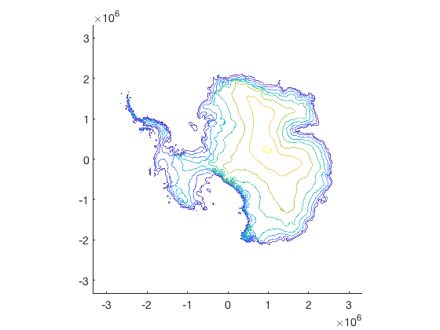
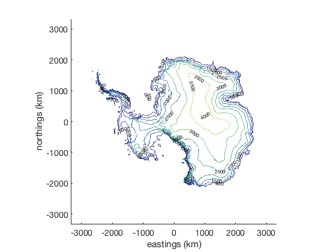

contourps documentation
contourps is part of Antarctic Mapping Tools for Matlab (Greene et al., 2017). Click here for a complete list of functions in AMT.
The contourps works just like Matlab's contour or contourm functions, but plots georeferenced data in Antarctic polar stereographic coordinates (true latitude 71°S). For example,
contourps(lat,lon,Z)
is equivalent to
[x,y] = ll2ps(lat,lon); contour(x,y,Z)
Contents
Syntax
contourps(lat,lon,Z) contourps(lat,lon,Z,n) contourps(lat,lon,Z,v) contourps(...,LineSpec) contourps(...,'km') contourps(...,'meridian',meridian) [C,h] = contourps(...)
Description
contourps(lat,lon,Z) draws contours of Z at gridded locations lat, lon.
contourps(lat,lon,Z,n) specifies a number of contour levels n if n is a scalar.
contourps(lat,lon,Z,v) draws a contour plot of matrix Z with contour lines at the data values specified in the monotonically increasing vector v. The number of contour levels is equal to length(v). To draw a single contour of level i, use v = [i i];
contourps(...,LineSpec) draws the contours using the line type and color specified by LineSpec. contourps ignores marker symbols.
contourps(...,'km') plots in polar stereographic kilometers instead of the default meters.
contourps(...,'meridian',meridian) specifies a meridian longitude in the polar stereographic coordinate conversion. Default meridian is 0.
[C,h] = contourps(...) returns contour matrix C and handle h of the contour object created.
Example 1: Simple case
Contour some surface elevation data from bedmap2:
[lat,lon,sfz] = bedmap2_data('sfz','res','5 km'); contourps(lat,lon,sfz)
Example 2: Polar stereographic kilometers
Using data from Example 1, plot in polar stereographic kilometers. For variety, use the cmocean (Thyng et al., 2016) haline colormap:
figure [C,h] = contourps(lat,lon,sfz,'km'); xlabel 'eastings (km)' ylabel 'northings (km)' cmocean 'haline' clabel(C,h,'LabelSpacing',300,'fontsize',8)
Example 3: Specify levels
Specify every 200 meters surface elevation from sea level to 5 km:
figure contourps(lat,lon,sfz,0:200:5000,'km') cb = colorbar; ylabel(cb,'surface elevation (m)')

Citing AMT
If this function or any other part of Antarctic Mapping Tools is useful for you, please cite the paper that describes AMT.
Greene, C. A., Gwyther, D. E., & Blankenship, D. D. Antarctic Mapping Tools for Matlab. Computers & Geosciences. 104 (2017) pp.151-157. doi:10.1016/j.cageo.2016.08.003.
Author Info
This function was written by Chad Greene of the University of Texas Institute for Geophysics (UTIG), July 2015, for inclusion in the Antarctic Mapping Tools package.